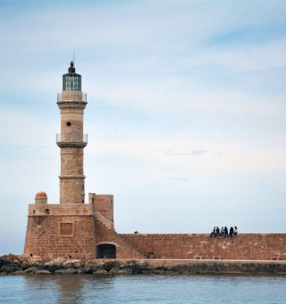

The Lighthouse of Chania, one of the oldest lighthouses in the world
The Lighthouse of Chania located in the old Port of Chania. It is one of the oldest lighthouses not only in Greece, but in the entire world.
It was constructed at the second half of 16th century, in the period 1595 to 1601, by the Venetians. Later, in 1830, it has been reconstructed by the Egyptians when English had assigned Crete to the regent of Egypt, Mehmet Ali. The tower is 21m high, height from sea surface 26m and its beam could reach a distance of 7 miles. It is built on an octagonal base with a 16-corner middle section and has a final circular section. The construction material of the base is has the same origin and quality of the material that used for the Venetian fortification of the city.
The Lighthouse is the main attraction in the old port of Chania, especially when it's lit up during the night and is a favorite walking area for locals and visitors. It is also the symbol of the city.
You can visit the Lighthouse of Chania through our tourTour 11and discover one of the greatest monuments of the island.
